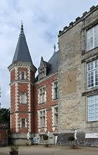
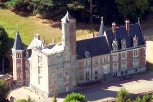
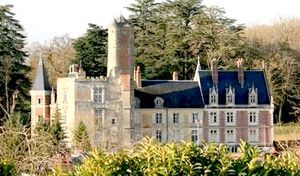
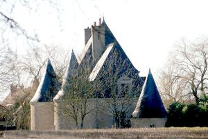
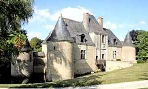

Recensement Jean-Claude Truffet
| Département | 37 — Indre-et-Loire |
| Canton | Château-Renault |
| Commune | Louestault |
| Type d'édifice | Château |
| Période d'origine | XV-XVII |





Trois châteaux à Louestault, le Beaumont et la Cantinière. CANTINIERE au XIe siècle, Louestault était une châtellenie relevant de la baronnie de Châteauneuf, à Tours. Elle passa ensuite à l'aumônerie de la Collégiale de Saint-Martin de Tours qui la vendit le 15 mai 1588 à Pierre Molan, contrôleur et intendant général des finances. Par la suite, elle fut la propriété des familles du Gast, Bouault et de la Grue. Le château de la Cantinière ou Quantinière, était un fief dépendant de Louestault. Il appartenait en 1606 à un nommé Lhuillier et fut hérité ensuite par les du Bouex. Vers 1640, il fut acquis par la famille Bouault, et passa vers 1703 aux Bonnin de la Bonninière de Beaumont. Ce château de la fin du XVIe siècle était fortifié. Il a encore ses douves ainsi deux tours circulaires. Une troisième tour, plus petite, renferme une chapelle remontant au XVIIe siècle. La salle fut alors couverte d'une coupole soutenue par des pilastres dont les chapiteaux portent des armoiries, mais presque effacées aujourd'hui. Sur le côté sud, s'élève un pavillon carré flanqué de deux ailes qui aboutissent chacune à deux tours rondes d'angle, la plus grosse est contiguë à l'aile correspondante et l'autre est reliée à son angle nord par une courtine. Le pavillon central est percé à son rez de chaussée d'une porte et d'un guichet qui étaient munis, l'une et l'autre, de ponts-levis dont on peut encore voir les rainures dans la façade.
BEAUMONT-Louestault, La construction du château date du XIIIe, XVI, XVIIIe et XIXe siècle. Beaumont fut d'abord une châtellenie relevant de Maillé et dont le premier seigneur est cité en 1108. Du château du XIIIe siècle, il subsiste un donjon carré découronné, de son chemin de ronde et de son étage supérieur, en 1780. Chaque angle possédait une tourelle en encorbellement, dont il ne subsiste que celle du Nord. Au XVIe siècle, les murs Est et Sud furent percés de fenêtres accostées de pilastres. En même temps, une tour fut élevée de forme octogonale, en briques. Le logis d'habitation se développe au Nord du donjon. La façade a été refaite au XVIIIe siècle. De 1874 à 1880, il a été prolongé par une construction de style Louis XII. Le château de Beaumont-Louestault est inscrit partiellement aux M.H. pour le donjon et la tourelle, depuis le 14/09/1949.
Beaumont; famille de Maillé Cantinière; Famille du Gast
"
à Louestault,le Beaumont grav 1-2-3 et la Cantinière grav -4-5. Beaumont-Louestaud 47° 34' 14,88" Nord, 0° 40' 11,64" Est Cautinière 47° 35' 09" Nord et 0° 39' 43" Est